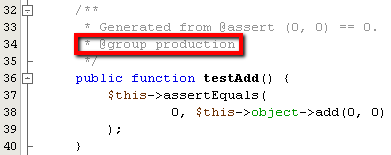

Apache NetBeans
Apache NetBeansJust released!
PHPUnitとSeleniumを使用したテスト
| This tutorial needs a review. You can open a JIRA issue, or edit it in GitHub following these contribution guidelines. |
PHP向けのNetBeans IDEは、PHPUnit自動化テストをサポートしています。PHPUnitによって、NetBeans IDEでは、IDEがPythonに提供するコード・カバレージと同じように、PHPのコード・カバレージが提供されます。テストの出力は、IDEのJUnitおよびPythonのテスト・ランナーが使用するのと同じ、機能が豊富な出力ウィンドウに表示されます。
NetBeans IDEでは、PHPUnitに加えて、Seleniumの移植可能なテスト・フレームワークもサポートされています。Seleniumプラグインは、更新センターから入手できます。このプラグインをインストールすると、SeleniumサーバーがIDEの登録済サーバーに追加され、Seleniumのテスト・オプションがPHPのメニューに追加されます。
このチュートリアルに従うには、次のソフトウェアとリソースが必要です。
| ソフトウェアまたはリソース | 必須バージョン |
|---|---|
PHPダウンロード・バンドル |
|
PEARを含むPHPエンジン |
バージョン5。 |
Webサーバー |
Apache HTTP Server 2.2 (推奨) |
バージョン3.4.0以上 |
|
PHPUnitと同じバージョン |
PHPUnitのインストール
PHPUnitはPHPUnitのドキュメントに従って、PHPUnitのスケルトン・ジェネレータはスケルトン・ジェネレータのドキュメントに従って、PEARを使用してインストールします。PHPUnitバージョン3.4.0以上をインストールします。特別な設定は不要です。PHPUnitがインストールされたら、NetBeansで認識されます。PHPエンジンとともにPEARがインストールされている必要があります。また、PHPUnitのドキュメントには、PHPUnitが通常はローカルのPEARディレクトリにインストールされると記載されています。パスは /usr/lib/php/PHPUnit と記載されていますが、XAMPP for Windowsでは XAMPP_HOME\php\PEAR\PHPUnit になります。
NetBeans IDEでPHPUnitのインストールが認識されていることを確認するには、「ツール」>「オプション」(Macの場合は「NetBeans」>「プリファレンス」)を開き、PHPウィンドウを確認します。「単体テスト」タブを開きます。PHPUnitおよびスケルトン・ジェネレータのスクリプトのパスが表示されます。スクリプトが表示されない場合は、空のフィールドの横にある「検索」をクリックします。IDEでは、ローカル・システムでスクリプトを検索します。または、「参照」をクリックして、スクリプトを参照します。

PHPUnitテストの作成と実行
NetBeans IDEでは、ファイル内のすべてのPHPクラスに対するPHPUnitテストを作成し、実行できます。テスト・ジェネレータが正常に動作するように、PHPファイルは、ファイル内の最初のクラスと同じ名前にします。
クラスのPHPUnitテストを作成して実行するには:
-
CalculatorというPHPプロジェクトを作成します。このプロジェクトに
calculator.phpというファイルを作成します。このファイルに、PHPUnitのドキュメントのスケルトン・ジェネレータの章にあるCalculatorクラスを入力するか、または貼り付けます。
<?php
class Calculator
{
public function add($a, $b)
{
return $a + $b;
}
}
?>-
@assert注釈と、入力と出力の例を使用したコメント・ブロックを追加します。この例には間違った表明が1つ含まれています。
<?php
class Calculator
{
/**
* @assert (0, 0) == 0
* @assert (0, 1) == 1
* @assert (1, 0) == 1
* @assert (1, 1) == 2
* @assert (1, 2) == 4
*/
public function add($a, $b)
{
return $a + $b;
}
}
?>| 注釈のコード補完を使用して、`@assert`注釈を追加できます。[Tab]キーを使用してパラメータ間を移動するか、またはパラメータ値を入力して[Enter]を押します。 |


-
「プロジェクト」ウィンドウで「Calculator.php」ノードを右クリックし、「ツール」>「PHPUnitテストを作成」を選択します。「ソース・ファイル」ノードのコンテキスト・メニューで、プロジェクト内のすべてのファイルのテストを作成できます。

-
テストを初めて作成するときは、テスト・ファイルを保存するディレクトリを指定するダイアログが開きます。この例では、参照機能を使用して
testsディレクトリを作成しています。

| 1つのプロジェクトに複数のテストを手動で記述できます。複数のテストを記述する場合は、テスト・ファイルのディレクトリのサブディレクトリ(たとえば、"important"、"quick")に、それらのテストをソートできます。次に、サブフォルダを右クリックし、「テストの実行」を選択して、サブフォルダ内のテストを実行できます。 |

-
IDEによって、CalculatorTest.phpというファイルに、スケルトン・テスト・クラスが生成されます(このファイルは、「プロジェクト」ウィンドウに表示され、エディタで開きます)。

``@assert`` 注釈ごとにテストが作成されます。
/**
* Generated from @assert (1, 1) == 2.
*/
public function testAdd4()
{
$this->assertEquals(
2,
$this->object->add(1, 1)
);
}-
1つのファイルまたはプロジェクト全体をテストできます。プロジェクトをテストするには、プロジェクトの親ノードを右クリックして「テスト」を選択するか、または[Alt]-[F6]を押します。Calculator.phpファイルをテストするには、ファイルのノードを右クリックして「テスト」を選択するか、または[Ctrl]-[F6]/[⌘]-[F6]を押します。この例では、1つのファイルに1つのクラスのみがあるため、結果は同じです。IDEによってテストが実行され、「テスト結果」ウィンドウに結果が表示されます。

より詳細なテキスト・バージョンの結果が「出力」ウィンドウに表示されます。

テスト・グループの使用
テスト・スイートを実行するとき、実行するテストのグループを選択できます。たとえば、一部のテストは本番環境でのみ実行し、他のテストは本番環境と開発環境の両方で実行する場合があります。前者のテストを production グループに配置し、後者のテストを production グループと development グループの両方に配置します。テスト・スイートを開発環境で実行する場合、 development テスト・グループのみを選択して実行します。
PHPプロジェクト内の任意のファイルについてテスト・グループを使用するには、そのプロジェクトでテスト・グループを有効にする必要があります。
テスト・グループの一部としてテストをマークするには、テスト・メソッドに @group [group name] の注釈を付けます。
テスト・グループを作成および実行するには、次を実行します。
-
「プロジェクト」ウィンドウで「Calculator」ノードを右クリックし、「プロパティ」を選択します。「プロジェクト・プロパティ」が開きます。
-
「プロジェクト・プロパティ」で「PHPUnit」カテゴリを選択します。「テストの実行前にテスト・グループの入力を求める」を選択します。「OK」をクリックします。

-
エディタで
CalculatorTest.phpを開きます。 -
メソッド
testAdd、testAdd3、およびtestAdd5について、注釈@group productionを追加します。

-
メソッド
testAdd2およびtestAdd4について、注釈@group productionおよび@group developmentを追加します。
-
Calculator.phpノードを右クリックし、「テスト」を選択します。ダイアログが開き、実行するテスト・グループを指定するように求められます。「development」を選択して「OK」をクリックします。IDEは、@group developmentという注釈が付いたテストのみを実行します。

NetBeans IDEのPHPUnitテスト・グループの詳細は、PHP向けのNetBeans IDEブログ投稿のPHPUnitテスト・グループの使用を参照してください。
テスト結果とIDE出力
PHPUnitのテスト結果は、IDEの「テスト結果」と「出力」の2つのウィンドウに表示されます。「テスト結果」ウィンドウには、グラフィック・ペインと簡単なテキスト・ペインがあります。「出力」ウィンドウには、より詳細なテキスト・バージョンの出力が表示されます。この項では、「テスト結果」ウィンドウと「出力」ウィンドウについて詳しく説明します。
「テスト結果」ウィンドウでは、次の場所で、失敗したテストに関する情報を確認できます。
-
UIペイン内で、失敗したテストのツリー・エントリに添付されているメッセージ
-
右側のペイン内のテキスト(失敗したテスト・コード行へのリンクを含む)
-
UIペイン内で、失敗したテストの上にカーソルを置くと表示されるツールチップのテキスト

「テスト結果」ウィンドウの左側には次のボタンがあります。
-
テストを再実行

-
失敗したテストの表示

-
成功したテストの表示

-
成功したがエラーがあるテストの表示

-
次のテスト結果
 または前のテスト結果への移動
または前のテスト結果への移動
「出力」ウィンドウには、PHPUnitスクリプトの完全な出力が表示されます。「テスト結果」ウィンドウ内の情報ではエラーの原因を特定できない場合に便利です。「テスト結果」ウィンドウと同様に、「出力」ウィンドウには、失敗したテスト・クラス行へのリンクが含まれます。また、テストを再実行したり、PHPの「オプション」ウィンドウを開いたりするためのボタンが左側にあります。
コード・カバレージ
PHP向けのNetBeans IDEには、PHPUnitのサポートとともにコード・カバレージがあります(IDEには、Pythonのコード・カバレージもあります)。コード・カバレージでは、すべてのメソッドがPHPUnitテストでカバーされるかどうかが確認されます。この項では、既存のCalculatorクラスでコード・カバレージがどのように機能するかについて説明します。
コード・カバレージを使用するには:
-
Calculator.phpを開き、
add2というadd関数の複製を追加します。Calculatorクラスは次のようになります。
<?php
class Calculator {
/**
* @assert (0, 0) == 0
* @assert (0, 1) == 1
* @assert (1, 0) == 1
* @assert (1, 1) == 2
* @assert (1, 2) == 4
*/
public function add($a, $b) {
return $a + $b;
}
public function add2($a, $b) {
return $a + $b;
}
}
?>-
プロジェクト・ノードを右クリックします。コンテキスト・メニューから、「コード・カバレージ」>「コード・カバレージを収集し表示」を選択します。デフォルトでは、「エディタ・バーを表示」も選択されています。

-
エディタの最下部に、コード・カバレージのエディタ・バーが表示されます。コード・カバレージはテストされていないので、エディタ・バーには0%のカバレージが表示されます。(「クリア」をクリックしてテスト結果をクリアした後もこのように表示されます。)

-
「テスト」をクリックして開いているファイルをテストするか、または「すべてのテスト」をクリックしてプロジェクトのすべてのテストを実行します。テスト結果が表示されます。また、コード・カバレージのバーに、テストでカバーされている実行可能コード文の割合(パーセント)が示されます。エディタ・ウィンドウで、カバーされているコードは緑色で強調表示され、カバーされていないコードは赤で強調表示されます。
*警告: *add2関数を追加した後でテスト・ファイルを再生成した場合、PHPUnitテストは実行されません。これは、PHPUnitが2つの競合するtestAdd2関数を作成するためです。このような複数の関数についてPHPUnitを使用する場合、末尾に数字を付加することによって関数を区別しないでください。PHPUnitのドキュメントを参照してください。

-
エディタ・バーで、「レポート」をクリックします。コード・カバレージのレポートが開き、プロジェクトに対して実行されたすべてのテストの結果が表示されます。レポート内のボタンを使用して、結果をクリアしたり、すべてのテストを再実行したり、コード・カバレージを非アクティブ化(「完了」をクリック)できます。

-
プロジェクトに別のクラスを追加し、テスト・ファイルを削除して再作成して、コード・カバレージのレポートをもう一度確認できます。新しいクラスが表示されます。次のレポートでは、
Calculatorクラスに、テストに含まれない関数が再度含まれています。

プロジェクト固有の構成の使用
IDEでは、プロジェクトに次のカスタム構成を選択できます。
-
ブートストラップ・ファイル
-
XML構成ファイル
-
テスト・スイート
-
カスタムのPHPUnitスクリプト
プロジェクト固有の構成を設定するには:
-
プロジェクトのノードまたはプロジェクトの「テスト・ファイル」ノードを右クリックし、「プロパティ」を選択します。「プロパティ」ダイアログが開きます。

-
「PHPUnit」カテゴリを選択します。カスタムのブートストラップ、XML構成、PHPUnitスクリプト、またはテスト・スイート・ファイルを選択できるダイアログが開きます。

-
ブートストラップの構造やXML構成ファイルに精通していない場合は、NetBeans IDEを使用してスケルトンを生成できます。また、「ヘルプ」をクリックして、ダイアログを使用する手順を調べることができます。

カスタム・クラス・ローダーを使用するプロジェクトの場合、 __autoload() 特殊関数の実装などによる、_ブートストラップ・オプション_が必要です。プロジェクトの複数のクラスで使用するグローバル定数を定義するファイルなど、事前にファイルを含める必要がある場合も、ブートストラップ・オプションを使用します。
_XML構成ファイル_を使用して、コマンド行のコールに使用するオプションを定義できます。詳細は、PHPUnitのマニュアルを参照してください。XML構成ファイルを使用して、テスト・ケースに php.ini 設定やグローバル変数を定義することもできます。また、XML構成ファイルにブートストラップ・オプションを設定することもできます。
_カスタム・テスト・スイート_を設定すると、「実行」>「プロジェクトをテスト」を選択するたびに、このスイートが実行されます。これは、テストのサブセットのみを実行する場合や、データ・プロバイダなど、手動で追加する必要があるPHPUnitの最近追加された機能を使用する場合に非常に便利です。テスト・スイートは必要な数だけ定義でき、プロジェクト・エクスプローラでファイルを右クリックして「実行」を選択すると、それらを個別に実行できます。混乱を防ぐため、カスタム・テスト・スイートを使用するときには、NetBeansから通知があります。通知は、「テスト結果」および「出力」ウィンドウで確認できます。
「ツール」>「オプション」で選択したデフォルトのスクリプトのかわりに、プロジェクトの_カスタムPHPUnitスクリプト_を使用できます。カスタムPHPUnitスクリプトには、コマンド行のスイッチを含めることができます(PHPUnitのマニュアルを参照)。
Seleniumフレームワークでのテストの実行
Seleniumは、Webアプリケーション用の移植可能なソフトウェア・テスト用フレームワークです。テストは、HTMLの表として記述したり、一般的なプログラミング言語でコーディングでき、最新のほとんどのWebブラウザで直接実行できます。Seleniumは、Windows、Linux、およびMacintoshにデプロイできます。詳細は、SeleniumのWebサイトを参照してください。
NetBeans IDEには、Seleniumサーバーを含むプラグインがあります。このプラグインを使用して、PHP、Webアプリケーション、またはMavenプロジェクトに対してSeleniumのテストを実行できます。PHPに対してSeleniumのテストを実行するには、Testing SeleniumパッケージをPHPエンジンにインストールする必要があります。
PHPに対してSeleniumのテストを実行するには:
-
コマンド・プロンプトを開き、コマンド
pear install Testing_Selenium-betaを実行します。パスにPHP_HOME/php/PEARが含まれている必要があります。コマンドが正常に完了したら、プロンプトにinstall ok: channel://pear.php.net/Testing_Selenium-0.4.3と表示されます。 -
IDEで、「ツール」>「プラグイン」を開き、PHP向けのSeleniumモジュールをインストールします。
-
「プロジェクト」ウィンドウで、Calculatorプロジェクトのプロジェクト・ノードを右クリックします。「新規」>「その他」を選択します。新規ファイル・ウィザードが開きます。「Selenium」を選択し、「次」をクリックします。

-
Seleniumのテストを初めて作成するときは、Seleniumのテスト・ファイル用のディレクトリを設定するダイアログが開きます。これは、PHPUnitのテスト・ファイルとは別のディレクトリにします。そうしないと、単体テストを実行するたびにSeleniumのテストが実行されます。Seleniumのような機能的なテストの実行は、単体テストの実行よりも時間がかかるため、単体テストを実行するたびにこれらのテストが実行されることは避けたい場合があります。
-
名前と場所ページの設定はデフォルトのままにし、「終了」をクリックします。Seleniumの新しいテスト・ファイルがエディタで開き、「プロジェクト」ウィンドウに表示されます。

-
プロジェクトのコンテキスト・メニューに「Run Selenium Tests」という項目が追加されます。この項目をクリックすると、PHPUnitテストと同様に、Seleniumのテスト結果が「テスト結果」ウィンドウに表示されます。
その他の課題
有益なアイデアをいくつか紹介します。
-
Calculator.phpに、2番目のクラス($aと$bの積を求める
Calculator2クラスなど)を追加します。テストを削除して再生成します。 -
複数の部に分かれているCRUDアプリケーションの作成のチュートリアルを試す場合は、最後のプロジェクトのSeleniumテストを作成します。 link:/about/contact_form.html?to=3&subject=Feedback:PHPUnit and Selenium on NB 6.7[このチュートリアルに関するご意見をお寄せください]
users@php.netbeans.orgメーリング・リストに登録することによって、NetBeans IDE PHP開発機能に関するご意見やご提案を送信したり、サポートを受けたり、最新の開発情報を入手したりできます。このリストはNetBeans IDEフォーラムにミラーがあります。